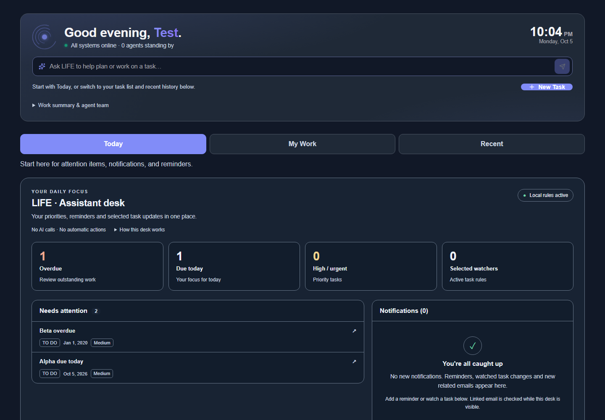
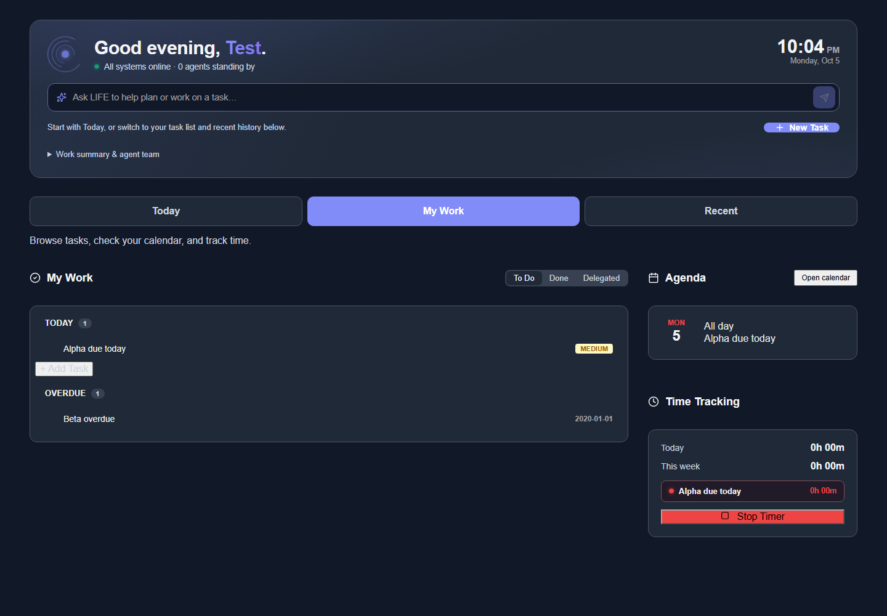

AR Generator
A task and knowledge workspace that connects everyday work with AI-assisted workflows.
- React
- TypeScript
- AI agents
- Node.js
Also explore


Tasks & agendaHello, I'm
I build health information systems, AI-assisted workspaces and business applications — from field data collection to quoting and everyday operations.
Inside the projects
Real application screens, captured with sample data. Select a screen to explore the details.

A task and knowledge workspace that connects everyday work with AI-assisted workflows.

Tasks & agendaA visual planning workspace connecting shed calculations, layouts and concept drawing sheets.
Want the technical story? Explore the full project list
I'm a full-stack developer and AI engineer with a Master of Science in Computer Science. By day I'm the Senior Information System Analyst for the Department of Health's Philippine Multisectoral Nutrition Project (PMNP), where I own the technical side of PMNP-IS — a DHIS2-based national information system used by community volunteers, supervisors and analysts to track the nutrition of mothers and children across hundreds of barangays.
Alongside that, I work as a contract developer for Numat Group in New Zealand, shipping production tools for their agri-shed, health-and-safety and site-visit workflows — React front-ends, Supabase/Postgres back-ends, and integrations with NetSuite, HubSpot and SharePoint.
I like problems that sit between data, people and operations: making a field app work offline in a remote barangay, tuning a Postgres analytics query from minutes to milliseconds, or teaching an AI agent to read email, drive a browser and finish the task itself. I lean heavily on AI-augmented development to move fast — and on tests, probes and proofs to make sure fast is also correct.
Department of Health (DOH) — Philippine Multisectoral Nutrition Project (PMNP) · Manila
Numat Group · New Zealand (remote)
Personal projects · 2021 — present
An all-in-one task, docs and email workspace with an autonomous AI agent (Learning Intelligence For Everything). The agent plans, calls tools, reads mail and files, edits Google Docs/Sheets, drives a quarantined virtual computer with a browser, terminal and desktop, records "teach me" lessons, and remembers you across sessions with a layered AI Brain memory.
DHIS2-based tracker system with custom field-interviewer and supervisor apps, a WHO-standard scorecard engine, randomized sampling, masterlist reporting and program indicators — supporting community volunteers and supervisors across the Philippines.
Production quoting tool for kitset sheds: wind-zone design pressures with live recalculation, per-bay geometry, roof-pitch and sheet calculators, pricing matrices for cladding, H5 poles and H3 timber, roller-door rules, saved BOMs and Excel export.
End-to-end site-visit automation: mobile capture with photos and notes, AI-written NZ-English summaries, a reviewer queue, archiving to SharePoint via Microsoft Graph, and opportunity sync into NetSuite.
Division-scoped H&S records and hazards with role-based gates, forced first-login password change, hardened auth and a shared design system — deployed with continuous delivery from GitHub.
Pipeline for kitset opportunities: quoting workflow, custom NetSuite forms populated with shed specs, HubSpot intake webhooks and owner mapping; database migrated from Neon to Supabase.
Motorcycle parts shop system built in five phases: catalogue & inventory, stock ledger with purchase orders and receiving, POS with customers, reports & dashboard, and workshop/warranty tracking with a full audit trail.
Appointment booking and schedule management for a physical-therapy clinic — patient intake, slot management and a lightweight admin view.
A REST API over the Philippine Standard Geographic Code — regions, provinces, cities/municipalities and barangays — for address pickers and data validation.
A locally-run AI agent experiment in Python — tool use and task execution without sending data to the cloud.
Browser-based traffic-flow simulation, a continuation of an earlier traffic-AI research line (publisher server, pages and computer-vision experiments).
A TypeScript point-of-sale application — product catalogue, cart, checkout and sales records for small retailers.
Public repositories pulled live from github.com/xdeelord24.
Loading repositories…
Open to collaborations in health informatics, AI-agent tooling and full-stack product work. The fastest way to reach me is email.